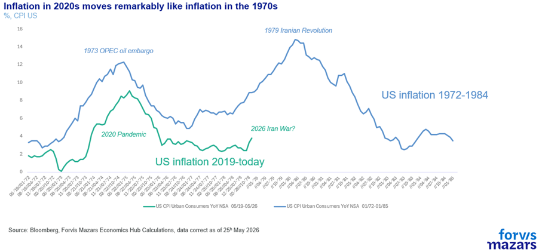
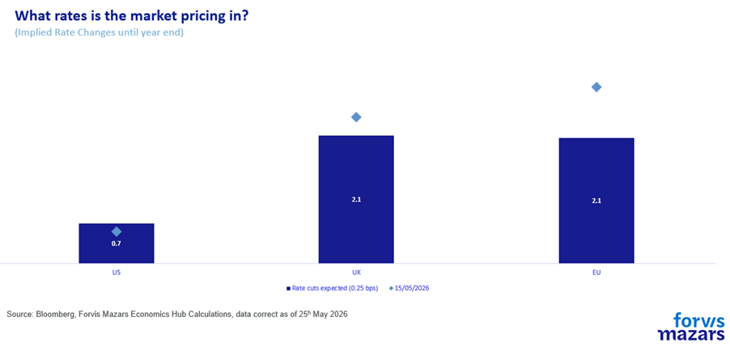

The three things investors should know about this week.
We might be drawing closer to an endgame at Hormuz.
However, what will matter more than the “peace”, if and whenever achieved, is the manner of upholding all parties responsible for keeping the Strait open.
We feel the process could be drawn out, and macroeconomic effects could linger until year’s end, while risk premiums for goods out of the Persian Gulf could remain high for some time.
------------------
Executive Summary
Prospects for peace with Iran may be improving, but analysis should rely on verified facts, not signals. Even then, hopes for sustainable peace in the Middle East, a concept elusive for decades, should be taken not with a grain, but a tablespoon of salt. While global leaders favour de-escalation amid rising borrowing costs and inflation risks, assumptions of rapid economic normalisation are, likely, premature. Western governments are incentivised to stabilise conditions, yet Iran’s leadership may benefit from sustained tension to project strength, draw allies and deter threats. Even if the Strait of Hormuz reopens, disruptions are likely to persist, while there is good reason for risk premiums to remain higher than previously for a long time. Oil prices and inflation may ease only gradually, while yield curves adjust slowly. Investors should remain cautious, questioning the durability of any agreement and prioritising resilience over short-term gains.
------------------
Are we closer to peace in Iran? Possibly, although from an investment and economic forecasting standpoint, we would begin analysis when facts, not perceived intent, drive the discussion. This is a lesson of the last few months, too hard learned to ignore. Even as the two parties discuss, skirmishes still take place.
But still, incentives drive behaviours, and who doesn’t want peace? World leaders certainly do (well, most of them) as they see long government borrowing costs soaring and inflation threatening to cross the 5% barrier again in 2026, the second time in less than a decade. Meanwhile, we seewarningsthat Europe and the US could face oil shortages in the summer if the situation is not resolved.

Should we assume that inflation will come down fast, lower rate expectations or even lower short-term interest rates (as the President’s economic adviser, Kevin Hasset predicted) will automatically occur as well as a plummeting in longer-term borrowing costs and oil prices and, subsequently, a rally in risk assets?

Let’s wait for facts and take a good hard look at incentives. In the West, the twin headwinds of limited fiscal space and inflation eating into real incomes are putting pressure on governments, whose survival depends by and large on keeping consumers happy, to force an end to the Hormuz stand-off.
The problem, however, lies not in Western governments, or even China, but Iran. For the Iranian Revolutionary Guards, the goal is also survival. But their incentives are inverted. Instead of economic welfare, their incentive comes from asserting their power, especially internally, after the loss of more than one layer of leadership. The appearance of “beating”, or even “fending off” the United States of America, counts as a win, and a big one. The more economic pain they can inflict, the more potential attackers will be warned against future incursions. The more strength they project, the lower the probability of an uprising and the higher the probability of attracting allies in the region. Their point of lower utility lies only in the economic pain they might be inflicting on the same allies they hope to draw in.
Still, let us assume, without much evidence beyond White House tweets and the lack of outright hostilities in the past few weeks, that Hormuz reopens. We have often commented that a return to the previous status quo, the free passage into and out of the Persian Gulf, does not mean a swift return to normality.
If the Treaty of Versailles ever taught us anything is that there is “good peace” and “bad peace”.
Without even touching the issue of nuclear energy, we can just focus on geopolitics. Iran has played its hand, and will have incentives to play it again. The threshold for doing so will likely be much lower than in the past, and the marginal cost of doing so for the, mostly isolated, nation is also small. If Israel attacks Lebanon, the Strait could be closed. If the Houthis suffer strategic defeats at the hands of the Saudi-backed Yemeni government, the Strait could be closed. If terrorist attacks directly attributable to Iran happen, Iran can deny, and if that’s not enough, the Strait could be closed. And so it goes. If the US and allies wanted to really secure Hormuz, they would have no option other than to find a (likely very expensive and uncertain) military way to guard against drone attacks, surface-to-surface missiles, etc., or achieve outright regime change. Costs are heavily asymmetrical. The allies' marginal costs of securing Hormuz (missiles, electronic warfare, possibly a beach assault) are significantly above those of Iran closing it. Thomas Crombie Schelling's coercion theory predicted this. InArms and Influence(1966), he distinguished compellence from deterrence and argued that the side that can credibly threaten to destroy something the other side values does not need to be stronger. It just needs to hold the hostage.
Simply put, what has changed in the status quo, that affects all of the global economy, is that a conflagration of hostilities in the Middle East is no longer decoupled from economic and market consequences, as has been the case for a long time. As long as unhindered trading through the Persian Gulf relies on the concept of “peace in the Middle East”, then the goods coming out of the Gulf will likely have a risk premium that is higher than previously.
What does this all mean for the economy and investments?
Investors should be extremely wary about outcomes. Even if peace is signed, they need to question the robustness of the deal that would keep the Strait open, and calibrate against Iran’s incentives to re-close it at will.
Businesses and investors should be ready for high-risk premiums for products out of the Persian Gulf for the foreseeable future. Insurance companies will likely not immediately return to their pre-war premiums, but gradually.
Oil prices will likely not come crashing down immediately. It may take some time before oil tankers can cheaply and reliably enter and exit the Strait.
The macroeconomic effects will likely linger until the year's end. Inflation will likely go up before it goes down. After three months of closure, global supply chains are disrupted at levels not observed beyond the pandemic. It will take time for goods and services to flow. Having said that, we haven’t seen evidence that would make this inflation wave longer-term entrenched.
Assuming peace, yield curves will likely begin to move lower (i.e. both long and short-term yields will come down), but in a paced way.
If the Fed lowers interest rates in 2026 (a big if), then we could expect to see shorter-term borrowings lower faster. This is called a “bull steepener”.
The bottom line is that it pays for investors and businesses to take their time. Chokepoints close easily, but it may take time to reestablish trust. The marginal cost of not “beating the competition” as and when peace breaks out in the Middle East is much smaller than getting it wrong. It is the same for investors and businesses as it is for central banks whose inflation-fighting credentials may be on the line.